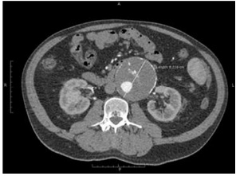
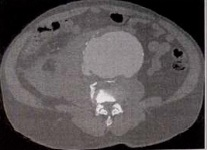
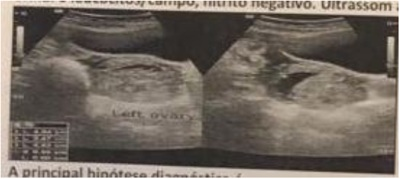
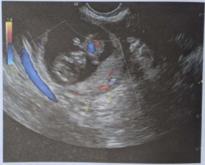

Paciente de 38 anos, GII P0 AI, deu entrada no PSO com queixa de sangramento vaginal em pequena quantida- de e dor em hipogástrio de início súbito. IG cronológica de 7 semanas. Nega ultrassom prévio. PA 90 x 60 mmHg, FC: 105 bpm, exame físico: TV (toque vaginal) bimanual: dor à descompressão brusca positiva, colo impérvio, grosso e posterior. Dor à mobilização do colo uterino. Fundo uteri- no intra-pélvico. Especular: vagina com mínima quantidade de sangue. Sem sangramento ativo. Beta HCG quantitativo: 3.000 mIU/mL. Diante do quadro exposto, assinale a alter- nativa que apresenta a suspeita diagnóstica mais provável.
Homem, 68 anos, foi levado por familiares ao serviço de emergência médica, apresentando mal-estar e dor abdominal difusa, de início súbito há cerca de 30 minutos. PA: 90 x 60 mmHg, FC: 115 bpm. Ao exame, observa-se massa pulsátil em região de mesogastro. Paciente com histórico de angioplastia com Stent, hipertensão e tabagismo há 35 anos, 40 cigarros/dia. O diagnóstico e conduta, neste caso, são
Paciente, 21 anos, é atendida na emergência com queixa de dor em FIE de forte intensidade associada a sangramento vaginal discreto, sudorese e palidez. Refere diagnóstico recente de gestação, após realização de BHCG. Ao exame: FC 120 bpm, PA: 80x50 mmHg, abdômen doloroso a palpação super cial e profunda, peristalse débil com sinal de descompressão dolorosa. Toque vaginal: colo posterior, longo, fechado, doloroso a mobilização, com sangramento discreto em dedo de luva. Realizada culdocentese com saída de sangue. A principal hipótese diagnóstica é:
Homem, 65 anos, hipertenso mal controlado, apresenta há 40 minutos dor abdominal intensa de início súbito e síncope. Ao exame clínico: pressão arterial 100/70 mmHg, frequência cardíaca 110 bpm, pálido e sudoreico e massa pulsátil em abdome e dor à palpação abdominal profunda difusamente. A conduta a seguir é:
Entende-se como o “Grito de Douglas”:
Mulher de 40 anos de idade comparece à emergência por dor intensa em baixo ventre e sangramento vaginal em pequena quantidade há 3 dias. Sem outras queixas. Tem história prévia de 2 gestações, com um parto normal sem intercorrência e um aborto. Não sabe relatar quando foi a sua última menstruação, mas acha que está atrasada. Não compareceu em consultas ginecológicas ou de pré-natal no último ano. Ao exame físico, apresenta frequência cardíaca de 88bpm e pressão arterial de 110x70mmHg, com abdome ácido e doloroso à palpação difusamente. O exame especular demonstrou a presença de sangramento em fundo de saco, em mínima quantidade. Ao toque vaginal, apresentou útero intrapélvico, anexos não palpáveis e dor à mobilização do colo uterino. Foi solicitada dosagem de beta-hCG, que foi positiva, e ultrassonogra a transvaginal, que evidenciou massa anexial à esquerda, medindo 5,1cm em seu maior diâmetro, íntegra, com embrião com batimento cardíaco embrionário. Qual é a conduta que deve ser adotada neste momento?
Homem, 76 anos, é submetido à correção cirúrgica eletiva de aneurisma de aorta abdominal infrarrenal por via aberta. Durante o procedimento, evidencia-se a oclusão da artéria mesentérica inferior. Pode-se a rmar que, nesse momento, a conduta melhor indicada, em relação à artéria mesentérica inferior, é realizar:
Adolescente de 15 anos, encaminhada ao pronto atendimento após quadro de desmaio, sangramento genital discreto e dor pélvica intensa. Paciente relata atraso menstrual há 3 meses. Nega uso de métodos anticoncepcionais. Ao exame: muito ansiosa, descorada ++/ 4+. PA: 80x40mmHg e FC: 134bpm. Abdome distendido e doloroso. Não foi auscultado batimentos cardíacos fetais. Ao toque colo amolecido, pérvio, sangramento discreto. Nesse contexto, assinale a alternativa que apresenta o PROVÁVEL diagnóstico dessa paciente.
Uma puérpera 32 anos de idade procura o pronto-socorro com queixa de fraqueza, sonolência, náuseas e dor abdominal súbita. Nega antecedentes médicos significativos. Está em bom estado geral, mas descorada. Pulso: 110 bpm, regular. PA: 90 × 50 mmHg. Após reanimação volêmica, o pulso é 95 bpm. O abdome está distendido e é doloroso difusamente. Não tem sinais de irritação peritoneal. A tomogra a mostra grande quantidade de líquido livre e aneurisma esplênico, com pequeno extravasamento arterial de contraste. A melhor conduta de urgência é:
Mulher, 26 anos de idade, pro ssional do sexo, dá entrada em pronto-socorro com dor tipo cólica suprapúbica de moderada intensidade e sangramento genital discreto. DUM: há 6 semanas. Uso irregular de preservativo. 2G1P normal 1A provocado. Refere ISTs prévias com tratamentos adequados. Faz uso de PREP devido a exposição de risco. Ao exame: bom estado geral, hidratada, FR: 20 irpm, FC: 98 bpm, PA: 90 × 50 mmHg. Abdome doloroso à palpação, sinal de La ont positivo. Especular: pequena quantidade de sangramento acastanhado coletado em fundo vaginal. Toque vaginal: colo grosso, posterior, impérvio amolecido, doloroso. O diagnóstico mais provável, dentre as opções abaixo, é:
Homem de 72 anos de idade, ativo, hipertenso com tratamento irregular, tabagista de 1 maço/dia há 50 anos, sem outras comorbidades, teve dor em região lombar esquerda há 3 semanas, após exercício físico. A dor persistiu por 2 dias. Desde então, está assintomático. Fez a angiotomogra a ilustrada a seguir. O diâmetro mostrado na imagem apresentada mede 8,216 cm. A conduta ideal para este paciente, dentre as abaixo, é:

A gravidez tubária representa 95% das gestações ectópicas. O ovo fertilizado pode se locar em qualquer posição da trompa, dando origem às gestações tubárias. Qual é o local da trompa mais frequente onde o ovo pode se implantar?
C.S.S., 23 anos, GI PI 1N A0, deu entrada no PSGO com história de dor abdominal intensa de início súbito. Estava em acompanhamento com curva de beta HCG. Há 7 dias, beta HCG 1547,0, sem evidência de gestação intrauterina, ovários identi cados e sem alterações, porém não identi cadas massas em regiões anexiais. Solicitado novo beta HCG há 5 dias de 1297,0. Ao exame físico: FC: 108 bpm, PA 100 × 50 mmHg, hipocorada +/4+. Abdome: dor à descompressão brusca positiva; ao toque vaginal bimanual: dor à palpação de fundo de saco vaginal posterior. O que se deve encontrar na USG de urgência e qual a conduta?
Mulher de 34 anos de idade, G1P1 referindo dor aguda em fossa ilíaca esquerda (FIE), iniciada após atividade sexual, acompanhada de náuseas. Apresenta ciclos menstruais irregulares e não se recorda da data da última menstruação. Ao exame encontra-se hipocorada, com PA = 80x50 mmHg, FC = 118 bpm, T = 37 °C abdome plano, tenso e doloroso à palpação profunda e à descompressão em FIE. Teste de gestação negativo. Na ultrassonogra a pélvica, grande quantidade de líquido em cavidade peritoneal com debris e imagem complexa com aspecto de "favo de mel", medindo 6 x 5 cm de diâmetro em anexo esquerdo. A conduta para o melhor cuidado dessa paciente é:
Paciente de 58 anos de idade, encontrado em via pública, desacordado, foi trazido ao serviço de emergência sem sinais de trauma, com massa abdominal pulsátil e hipotenso ao exame físico. Submetido a laparotomia exploradora, foi encontrado volumoso hematoma retroperitoneal contido. O próximo passo no tratamento cirúrgico desse caso é
Uma jovem de 20 anos é levada à emergência após um episódio de síncope. Ela se queixa de dor abdominal baixa e sangramento vaginal de início há 2 dias. Apresenta PA=85 x 40 mmHg, FC=130bpm, FR=18mpm e satO₂ 95% em ar ambiente. Sente-se tonta, mas responde adequadamente aos questionamentos e não apresenta déficits neurológicos focais. Qual a conduta mais apropriada neste caso?
Homem, 60 anos de idade, com antecedente de tabagismo e hipertensão, procura o hospital com queixa de dor abdominal súbita, de forte intensidade, irradiada para anco e lombar à esquerda, há 4 horas. Relata que teve um quase desmaio, com sudorese fria no momento do início da dor, e se recuperou após alguns minutos. Ao exame físico, apresenta-se normotenso, corado e bem perfundido, com pulsos palpáveis em todas as extremidades. O exame clínico do abdome revela massa pulsátil dolorosa. Qual é a principal hipótese diagnóstica?
Mulher de 30 anos, nuligesta, comparece ao setor de emergência do hospital com quadro de atraso menstrual de dois meses, dor abdominal difusa, tontura e sangramento vaginal discreto. Ao exame, nota-se palidez cutâneo-mucosa, sudorese, PA: 90 x 50 mmHg, FC: 140bpm, abdome doloroso à descompressão brusca, principalmente em fossa ilíaca direita. Toque vaginal com abaulamento e dor em fundo de saco posterior. Realizou ultrassonogra a pélvica transvaginal não visualiza imagem de saco gestacional intrauterino e vê imagem anexial sugestiva de prenhez ectópica íntegra < 4 cm. Dosagem de ß-hCG = 2.500 UI/L. Hemogobina=7,0mg/dL e Hematócrito= 25%. Assinale a assertiva correta quanto à conduta mais adequada deste caso.
Constitui fator de indicação cirúrgica de urgência nos pacientes com aneurisma de aorta abdominal:
Paciente com quadro clínico sugestivo de Aneurisma de Aorta Abdominal ""roto"". Qual a conduta mais apropriada?
Mulher de 56 anos é trazida ao serviço de emergência com quadro de dor lombar intensa, com início há 1 hora. Ao exame físico, encontra-se pálida e diaforética. FC 122, PA 60x45. Abdome ácido, algo doloroso à palpação e com massa abdominal medindo aproximadamente 7 cm de diâmetro. Em relação ao caso acima, assinale a alternativa incorreta:
Homem, 71 anos de idade, é admitido com dor abdominal em mesogástrio, contínua, com irradiação lombar há 7 horas. Nega trauma ou queda. Trouxe uma angiotomogra a prévia que confirmou aneurisma de aorta abdominal infra-renal. Exame físico: corado, consciente, eupneico, PA = 160/90 mmHg, FC = 92 bpm, com dor à palpação da aorta abdominal. Pulsos presentes e normais em membros inferiores. Qual é a conduta mais adequada?
Paciente com histórico de hipertensão mal controlada e dislipidemia é levado a um serviço de urgência com dor lombar de início súbito e hipotensão associada. Após manobras de ressuscitação habituais, o paciente foi submetido a tomogra a de abdome com contraste, onde a seguinte imagem foi obtida. Considerando os dados acima apresentados, marque a alternativa que apresenta melhor correlação entre diagnóstico e terapêutica:

Homem de 72 anos dá entrada no pronto-socorro com queixa de dor nas costas e no abdome anterior, de início súbito e com presença de um episódio de fezes com sangue. Ao examinar o paciente foi identi cada uma massa abdominal palpável em linha média. A pressão arterial do referido paciente estava baixa, referindo fazer tratamento para hipertensão arterial. Como plantonista da cirurgia, os sinais e sintomas descritos têm como provável causa:
Paciente de 35 anos de idade, sexo feminino, procurou auxilio médico na Emergência com queixa de dor abdominal súbita na fossa ilíaca direita acompanhada de sudorese, taquicardia e hipotensão. Na anamnese relatava ter sido submetida a laqueadura tubária. Qual o diagnóstico mais provável para esta paciente?
Homem, 68 anos, tabagista é submetido à correção de aneurisma de aorta abdominal. No segundo dia de pós-operatório apresenta dor e distensão abdominal, com quadro de sepse de evolução rápida. A hipótese diagnóstica mais provável para este quadro é:
Mulher, 24 anos, procura o pronto socorro referindo dor abdominal de inicio súbito há uma hora. Refere antecedentes de cisto de ovário na adolescência e in amação nas trompas há dois anos. Nega uso de contraceptivo oral e sua última menstruação ocorreu há dois meses. Ao exame apresenta-se pálida, com PA= 90 X 60 mmHg, FC= 120 bpm, abdome com peritonismo difuso e o exame ginecológico mostrou presença de sangue no canal vaginal. Frente ao quadro apresentado a hipótese clínica correta é:
Dentre os fatores não relacionados com o aumento do risco de rotura de um aneurisma de aorta abdominal, está
Mulher de 29 anos dá entrada ou PS com quadro de dor abdominal difusa, de início súbito com 6 horas de evolução. Historia pregressa de ciclo menstrual irregular e polimenorreia desde adolescência. Ausência de outras comorbidades. Ao exame: hidratada, descorada ++/4+, FC: 120 bpm, PA: 90 / 50 mmHg; abdome: dor a palpação super cial e profunda em abdome inferior mais intensa na fossa ilíaca direita, irritação peritoneal em todo abdome inferior. Exames da admissão: hemoglobina: 9,0, glóbulos brancos: 10.400 sem desvio à esquerda, ureia: 45, creatinina: 1,0, beta HCG: negativo, rotina urina; 6 leucócitos/campo, nitrito negativo. Ultrassom abaixo. A principal hipótese diagnóstica é:

Das alternativas abaixo, qual não é causa de abdome agudo hemorrágico:
Jovem de 15 anos chega ao serviço de urgência com queixa de dor abdominal aguda em hipogástrio, que se iniciou após atividade sexual. Usa DIU de cobre e está no 14° dia do ciclo menstrual. Está apresentando náuseas e tontura no momento. PA = 100 x 60 mmHg, FC = 108 bpm. Fez teste de gravidez negativo, Hemoglobina = 10,2 g/dL. A ultrassonografia de pelve e abdome observou pequena quantidade de líquido ecogênico intraperitoneal e uma massa em projeção de anexo direito com 5 cm de diâmetro e as demais características abaixo. A hipótese diagnóstica mais provável é

Homem, 69 anos de idade, chega à emergência com equimose de dorso e anco, instabilidade hemodinâmica, dor abdominal e massa pulsátil dolorosa na linha média do abdômen ao exame físico. Assinale a alternativa que apresenta a MELHOR CONDUTA em relação a essa condição.
O abdome agudo, que pode ser decorrente de inúmeras doenças, con figura um quadro clínico de dor dos mais importantes e frequentes na prática clínica. Pela sua gravidade, necessita de condutas diagnósticas e terapêuticas urgentes. Assinale a alternativa que apresenta uma causa de abdome agudo hemorrágico.
Num paciente com hemoperitônio devido a ruptura esplênica, a pressão exercida durante a palpação no abdome superior esquerdo com dor reflexa em ombro esquerdo, nos denominamos de sinal de:
Paciente 67 anos, hipertenso, tabagista, diabético com controle glicémico adequado, é admitido no serviço de urgência com queixa de dor abdominal difusa, iniciada há 3 horas. A admissão consciente orientado, conversando, eupneico, pulsos cheio e todos presentes, Fc 112bpm, Pressão Arterial: 90/50mmHg, abdome dolorido difusamente e com massa pulsátil em mesogástrio. Realizado Angio TC de abdome e pelve com contraste venoso e evidenciado dilatação da aorta abdominal de 6,1cm que se extende para artéria ilíaca comum esquerda (2,2cm) associada a extensa área de borramento do retroperitonio sugestivo de hematoma com deslocamento cranial do rim esquerdo, sem outras alterações. Considerando o caso apresentado, assinale a opção CORRETA.
A tríade clínica clássica dos pacientes com ruptura de aneurisma de aorta abdominal é constituída por:
Os Aneurismas da Aorta Abdominal (AAA) são de importância especial por se tratar daqueles mais frequentes na prática clínica. Na maioria das vezes são assintomáticos e detectados em exames de rotina ou de forma ocasional. Qual o principal fator de risco de ruptura do AAA?
Após uma cirurgia de emergência para tratamento de ruptura de aneurisma de aorta abdominal, no terceiro dia de pós- operatório o paciente queixa-se de dor de forte intensidade em anco esquerdo e apresenta diarréia mucosanguinolenta.. O diagnóstico mais provável é:
Uma paciente de 23 anos, feminino, refere há 6 horas dor em região inferior do abdome, acompanhada de lipotímia. Sem evidencias de trauma. Refere irregularidade no ciclo menstrual. Nega febre, vômitos ou outros sintomas. Ao exame físico, desidratada +/4+, hipocorada +++/4+, FC: 122 bpm, PA: 100/70 mmHg, FR: 24 ipm, MVUA sem RA, abdome algo distendido, normotimpanico, peristalse presente, dor difusamente à palpação mas sem evidencias de irritação peritoneal. Marque a alternativa que contenha, respectivamente, a principal hipótese diagnóstica e um exame complementar indicado:
Um homem de 70 anos procura a emergência com quadro de dor abdominal súbita e intensa periumbilical, acompanhada de síncope com sudorese profusa. Ao exame: regular estado geral, palidez (3+/4+), PA=70 x 30 mmHg e pulso liforme taquicárdico, abdome doloroso difusamente com massa palpável mesoabdominal, pulsátil. À inspeção geral: aspecto sindrômico, estatura elevada, pectus escavatum, rosto a lado, micrognatia e pés chatos. Após a infusão de 1L de solução cistalóide, PA=100 x 60 mmHg. Que exame é mais bem indicado para o diagnóstico e planejamento terapêutico, nessa circunstância?
Com relação à causa de Abdome Agudo Hemorrágico, a MENOS provável é
Uma moça de 24 anos estava na fila do banco quando, subitamente, apresentou tontura, sofreu uma síncope e caiu ao chão, pálida, com a mão no abdome inferior à direita. O pulso radial estava liforme e, rapidamente, chamaram uma ambulância do SAMU (Serviço de Atendimento Móvel de Urgência), que a encaminhou para um hospital. Ela chega com os seguintes dados vitais: PA = 75 x 30 mmHg, P = 135 bpm e FR = 32 irpm. Sobre esse caso e o diagnóstico diferencial de abdômen agudo, analise as proposições a seguir: I. A descrição do caso é compatível com um abdome agudo do tipo inflamatório e, pela idade e sexo da paciente, as hipóteses diagnósticas incluem apendicite aguda e doença inflamatória pélvica. II. A descrição do caso é compatível com um abdome agudo do tipo hemorrágico e, pela idade e sexo da paciente, as hipóteses diagnósticas incluem cisto de ovário roto e gravidez ectópica rota. III. A dor visceral apresenta um início súbito e de difícil localização e a dor parietal apresenta um início insidioso, porém, de fácil localização. IV. A melhor conduta nesse caso seria solicitar uma ultrassonografia abdominal para definir o diagnóstico dessa paciente. Estão CORRETAS a (s) proposição (ões):
Homem de 68 anos é atendido na emergência com quadro de dor abdominal súbita e intensa periumbilical acompanhada de síncope com sudorese profusa. Ao exame: estado geral torporoso; palidez (+++/4+); PA: 70 x 30 mmHg; pulso liforme taquicárdico. Abdome dolorido difusamente com massa palpável mesoabdominal, pulsátil. Demais achados: paciente apresenta aspecto sindrômico, estatura elevada, pectus excavatum, rosto a lado, micrognatia e pés chatos. Após infusão de 1 litro de solução cristaloide, PA: 100 x 60 mmHg. Qual exame é melhor indicado para diagnóstico e planejamento terapêutico, nessa circunstância?
Uma paciente de 28 anos refere dor abdominal há cerca de 12 horas. A dor é difusa e acompanhada de náuseas, vômitos e distensão abdominal. Nega febre. Está desidratada (+/4+) e muito descorada (3+/4+). O abdome está distendido e é maciço à percussão. Não se auscultam ruídos hidroaéreos. O toque retal não denota lesões e evidencia fezes na ampola retal. P = 120 bpm, PA = 100 x 80 mmHg, IMC = 35 kg/m². A paciente está em uso de anticoagulante oral, por trombose de membro inferior direito, há 3 meses. A hipótese diagnóstica mais provável é abdome agudo:
Sra. Clotilde, 80 anos, é submetida à cirurgia de emergência para tratamento de ruptura de aneurisma de aorta abdominal. No terceiro dia de pós-operatório queixa-se de dor de forte intensidade em anco esquerdo e apresenta diarreia mucossanguinolenta. O diagnóstico mais provável é:
Mulher com 64 anos de idade, com antecedentes de hipertensão arterial há cerca de 20 anos e tabagista (30 maços-ano), em uso de enalapril - 20 mg de 12/12h, foi trazida à Emergência de um hospital terciário com quadro de dor lombar de forte intensidade e início súbito, sem irradiação, que foi acompanhada por síncope, sem pródromos, iniciada há duas horas. Na admissão hospitalar estava consciente, orientada, anictérica, com palidez cutaneomucosa. Temperatura axilar = 36°C, pressão arterial = 70 x 45 mmHg, frequência cardíaca = 118 bpm, frequência respiratória = 18 irpm. Os exames do aparelho cardiovascular e pulmonar não demonstraram alterações. O abdome apresentava equimoses em ambos os ancos, e era levemente doloroso à palpação em mesogástrio e hipogástrio, com massa pulsátil em região do mesogástrio. Ruídos hidroaéreos presentes. Nos membros inferiores havia redução da temperatura distalmente e bilateralmente e redução da amplitude de todos os pulsos. Os exames laboratoriais iniciais revelaram: Leucócitos = 12.000/mm³ (segmentados = 74%, Hemoglobina = 12,1 g/dl; Hematócrito = 36,3%; Plaquetas = 231.000/mm³; Glicemia = 84 mg/dl (VR = 80- /dl); Ureia = 45 mg/dl (VR = 20-35 mg/dl); Creatinina = 1,2 mg/dl (VR = 0,8-1,4 mg/dl); Amilase = 352 U/L (VR = 4-400 U/L); TGO = 26 U/L (VR < 35 U/L) e TGP = 31 U/L (VR < 35 U/L). Considerando a condição clínica atual da paciente, o exame a ser realizado para confirmação diagnóstica é:
A ruptura do Aneurisma de Aorta Abdominal pode ocorrer para o retroperitôneo ou para a cavidade abdominal. Os sintomas e sinais clínicos são descritos abaixo, EXCETO:
Um paciente idoso dá entrada no PS com queixa de dor lombar à esquerda. Qual dos dados abaixo é indicativo de AAA roto e não de cólica renal à esquerda? Respostas: 1 12 23 34 45